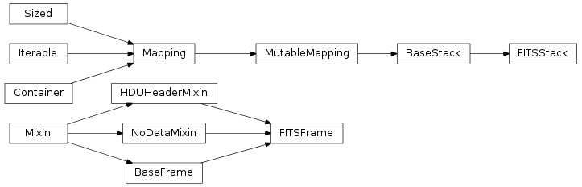

The FITSStack stack handles empty FITS Header-Data-Units (or HDUs). As such, it can only contain HDUs that do not have data, and should only be used when you need to write a FITS file that has only header information and no actual data. The module does serve as a good demonstration of the use and implementation of the AstroObjectBase – AstroObject API.

Bases: AstroObject.AstroObjectBase.BaseStack
This stack tracks a number of data frames. This class is a simple subclass of AstroObjectBase.BaseStack and usese all of the special methods implemented in that base class. This object sets up an stack class which uses only the FITSFrame class for data. As such, it can only contain objects which are classes (or subclassses of) FITSFrame.
Clears all frames from this object. Returns an empty list representing the currently known frames.
| Parameters: | delete (bool) – whether to explicitly delete frames or just stop referencing dictionary. |
|---|---|
| Returns: | list of frames remaining |
The data for the selected FITS frame. Equivalent to:
>>> Stack.data()
Returns the raw data for the current frame. This is done through the FITSFrame.__call__() method, which should return basic data in as raw a form as possible. The purpose of this call is to allow the user get at the most recent piece of data as easily as possible.
| Parameters: |
|
|---|---|
| Returns: | np.array of called data |
Warning
I have not finished examining some issues with referencing vs. copying data that comes out of this call. Be aware that manipulating some objects produced here may actually manipulate the version saved in the Object. The current implementation which protects this call relies on the numpy copy command, np.copy(frame()), which might fail when used with data objects that do not return numpy arrays.
The selected FITS frame. This frame is usually the last modified frame in the system. Equivalent to:
>>> Stack.frame()
or:
>>> Stack.frame(framename=Stack.s)
Returns the FITSFrame Specfied. This method give you the raw frame object to play with, and can be useful for transferring frames around, or if your API is built to work with frames rather than raw data.
| Parameters: | framename (string) – the name of the frame to be retrieved. |
|---|---|
| Returns: | dataClass instance for this object |
Warning
Unlike with the BaseStack.data() call, the object returned here should be treated as roughly immutable. That is, it is not advisable to re-use the data frame here, as Python has returned a reference to all examples of this data frame in your code:
>>> obj = BaseStack()
>>> obj.save(FITSFrame(None,"Label"))
>>> Frame = obj.frame()
>>> Frame.label = "Other"
>>> obj.frame().label
"Other"
Note
Using frames can be advantageous as you don’t rely on the Object to guess what type of frame should be used. Most times, the object will guess correctly, but Frames are a more robust way of ensuring type consistency
Current frame name:
>>> Stack.framename
Read an atfile into this object. The name of the atfile can include a starting “@” which is stripped. The file is then loaded, and each line is assumed to contain a single fully-qualified part-name.
Retrun a new object created from a filename. This method is a shortcut factory for read().
>>> obj = BaseStack.fromFile("SomeImage.fits")
>>> obj.list()
["SomeImage","SomeImage-1","SomeImage-2"]
Removes all frames except the specified frame(s) in the object.
| Parameters: |
|
|---|---|
| Returns: | list of frames remaining. |
Provides a list of the available frames, by label.
| Returns: | list |
|---|
This reader takes a FITS file, and trys to render each HDU within that FITS file as a frame in this Object. As such, it might read multiple frames. This method will return a list of Frames that it read. It uses the dataClasses FITSFrame.__read__() method to return a valid Frame object for each HDU.
>>> obj = BaseStack()
>>> obj.read("SomeImage.fits")
>>> obj.list()
["SomeImage","SomeImage-1","SomeImage-2"]
Removes the specified frame(s) from the object.
| Parameters: |
|
|---|---|
| Returns: | list of frames remaining. |
Saves the given data to this object. If the data is an instance of one of the acceptable dataClasses then this method will simply save the data. Otherwise, it will attempt to cast the data into one of the acceptable dataClasses using their __save__() mehtod.
| Parameters: |
|
|---|---|
| Raises : | TypeError when the data cannot be cast as any dataClass |
| Raises : | KeyError when the data would overwrite an existing frame. |
Sets the default frame to the given framename. Normally, the default frame is the one that was last saved.
| Parameters: | framename (string) – the name of the frame to be selected. |
|---|
If framename=None, then this method will select the most recently modified frame.
Returns the (rendered) matplotlib plot for this object. This is a quick way to view your current data frame without doing any serious plotting work. This aims for the sensible defaults philosophy, if you don’t like what you get, write a new method that uses the data() call and plots that.
| Parameters: | framename (string) – the name of the frame to be retrieved. |
|---|
Writes a FITS file for this object. Generally, the FITS file will include all frames curretnly available in the system. If you specify frames then only those frames will be used. primaryFrame should be the frame of the front HDU. When not specified, the latest frame will be used. It uses the dataClasses FITSFrame.__hdu__() method to return a valid HDU object for each Frame.
| Parameters: |
|
|---|---|
| Returns: | Tuple of (PrimaryFrame, Frames, Filename) |
Our first example frame is the FITSFrame. This class is a data frame which can only contain empty HDUs. As such, it does not implement all of the methods of the API, and instead uses the NoDataMixin class.
Bases: AstroObject.AstroObjectBase.HDUHeaderMixin, AstroObject.AstroObjectBase.NoDataMixin, AstroObject.AstroObjectBase.BaseFrame
A single frame of a FITS image. This Frame may not contain any data. It can only be used to hold and manipulate empty HDUs. Frames are known as Header Data Units, or HDUs when written to a FITS file.
| Parameters: |
|
|---|
Return data
Returns String Representation of this frame object. Will display the class name and the label. This method does not need to be overwritten by subclasses.
| Returns: | literal sting representation |
|---|
Require no data
Retruns a Header-Data Unit PyFits object. The abstract case generates empty HDUs, which contain no data.
| Parameters: | primary (bool) – Return a primary HDU |
|---|---|
| Returns: | pyfits.primaryHDU or pyfits.ImageHDU |
Show no data... NotImplemented
Show no data... NotImplemented
An abstract method for reading empty data HDU Frames.
| Parameters: |
|
|---|---|
| Raises : | NotImplementedError when this data can’t be saved. |
| Returns: |
Return a re-labeled copy of this object.
Retruns a Header-Data Unit PyFits object. The abstract case generates empty HDUs, which contain no data.
| Parameters: | primary (bool) – Return a primary HDU |
|---|---|
| Returns: | pyfits.primaryHDU or pyfits.ImageHDU |
Whether this object is valid.